Before Starting the Software
Type "ls" in the command line (without the quotes). Note the names of the files which appear. These should match the names of the files listed above. To test the functionality of the SCT, run each of the following test cases and note the expected outcome of each test.
Test Case 1: A Single File
Start SCT. An explanation of this is given in howto_sct.html
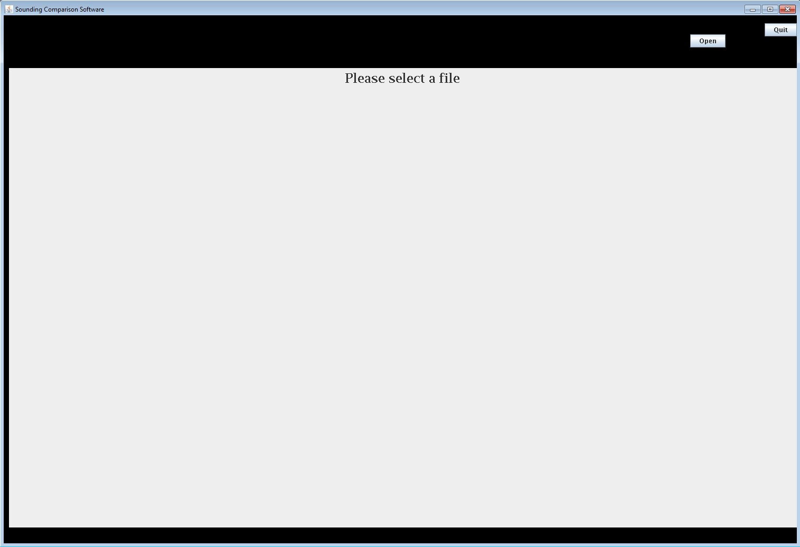
Click the "Open" button and try to open data.txt. If SCT_DataFilter.java is working properly, it should not appear in the JFileChooser. This is because it filters the data so only .cls and .qc files are immediately visible.
Open WEST_TEXAS_MESONET_20100614.cls. This file is a typical data file without too many missing data values. The filepath, name, data type and project ID should appear in red in the left side of the header. The "Clear" button, "Y variable" dropdown menu and "Plot" button should have appeared on the right side of the header.
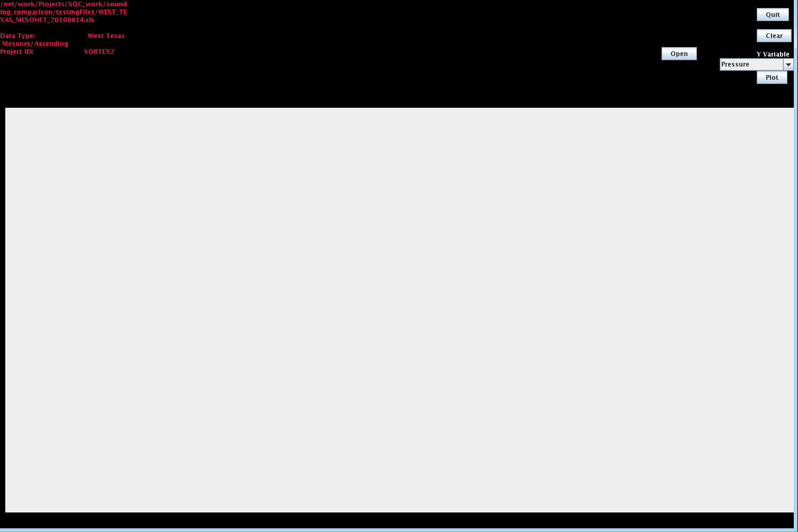
"Y variable" dropdown menu and "Plot" button should have appeared on the right side of the header. Make sure the drop down menu on the right side says "Pressure", then select the "Plot" button. The "Open" button should disappear, and the zoom menu and button should show up on the right side of the header (where the plot button and y-variable menu had been). Five plots should appear each with a red plot, labeled axes, and a title. These plots should be of temperature, relative humidity, wind speed, wind direction and ascension rate vs. pressure. Notice that the y-axes are all reversed, with the greatest value closest to the x-axis.
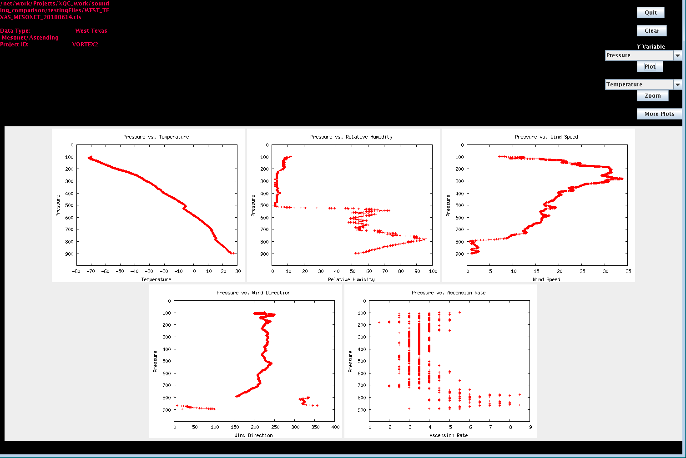
Press the "More Plots" button. Four different plots (of longitude, latitude, U wind and V wind) should replace the other five plots. Note that these four options are the only options visible in the zoom menu. Press "More Plots" again and return to the original plot view. The zoom menu should now contain temperature, relative humidity, wind speed, wind direction, and ascension rate.
Use the zoom menu and button.
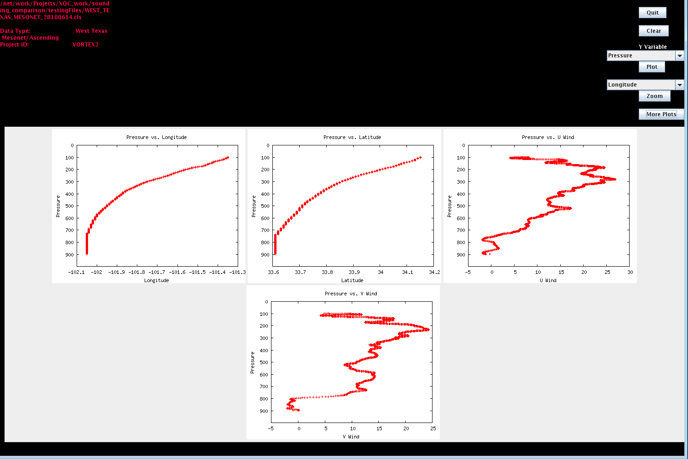
A full screen graph should appear. Press the "Exit" button in the top center of the zoom view, then press the "Clear" button in the upper right to move on to the next set of datafiles. The interface should reset to as it was when the program was initialized.
Test Case 2: Five Files
Open the following files (in order): sgp_C1_ARM_20100518-05.31.00.cls, sgp_C1_ARM_20100518-11.26.00.cls, sgp_C1_ARM_20100518-23.32.00.cls, WEST_TEXAS_MESONET_20100606.cls, WEST_TEXAS_MESONET_20100614.cls. These are just ordinary single-sounding .cls files. Once the fifth dataset is chosen, the "Open" button should disappear.
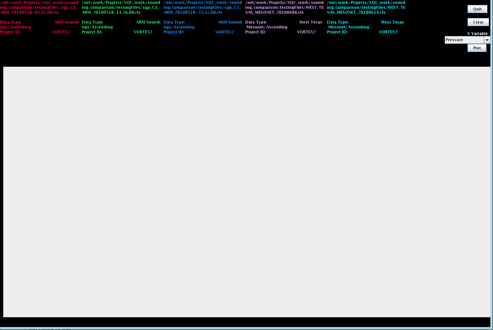
Plot with Time (upsonde) on the y-axis. Note that the colors of the datafile names in the header are red, green, blue, purple and cyan. These should correspond with the colors on the plots. Notice that the file information neatly fits into the header. Each file's information has wrapped text. This should fit properly no matter what the screen resolution is. Also note that there are no purple data points in the Wind Speed or Wind Direction plots. This indicates that the program is properly handling missing data, since WEST_TEXAS_MESONET_20100606.cls is missing all wind speed and wind direction data.
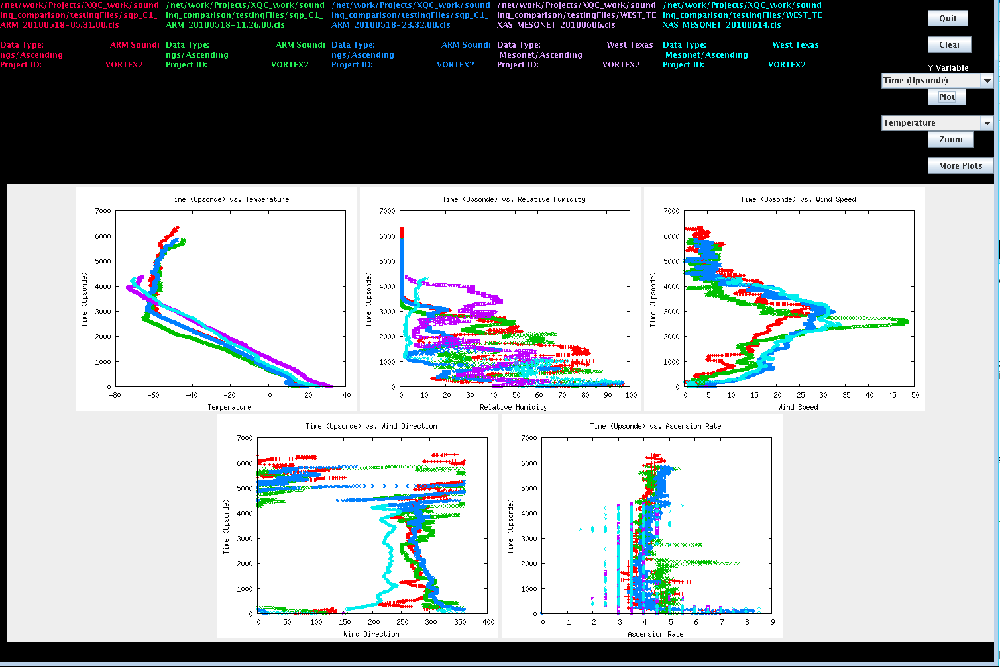
In the zoom view, the colors should stand out less. This is because the full screen plot are actually separately generated files. The data markers are the same size as on the small plots, so the colors are less concentrated on the larger graph.
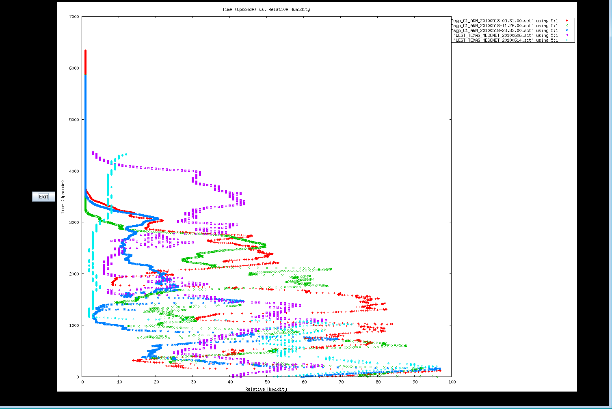
Clear the plot and proceed to the next set of files.
Test Case 3: Dropsondes Plotted Against Time
Open USAF_C130_AF307_20100922022717.cls, USAF_C130_AF307_20100922023411.cls, and USAF_C130_AF307_20100922024427.cls. These are dropsonde files.
Select "Time (Dropsonde)" from the plot menu and plot. The plots should appear with the y-axis inverted, with 0 at the top. These graphs, as well as those generated in the other test cases, should all be scaled properly to the data. If there is a scaling issue, this most likely indicates that missing data values are not being handled properly.
Clear the plot and continue testing
Test Case 4: Same File Entered Multiple Times
Open sgp_C1_ARM_20100518-05.31.00.cls
Open a second file and select the same file again.
Plot the data against altitude. Though both files are visible in the header, the red data should mostly not be visible on the plots.
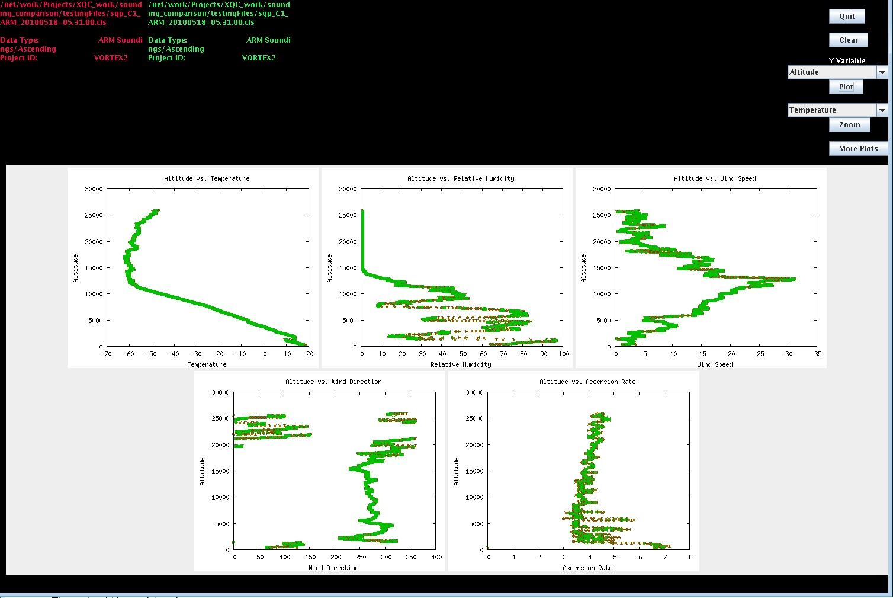
Zoom in on one of them. In the legend in the upper right corner, the red data point should be labeled sgp_C1_ARM_20100510-05.31.00.sct and the green data point should be labeled sgp_C1_ARM_20100510-05.31.001.sct. The addition of the integer at the end of the repeated file's name is there because two different new datasets were written by the program, and they need different names. The integer system is imperfect, though, as demonstrated below.
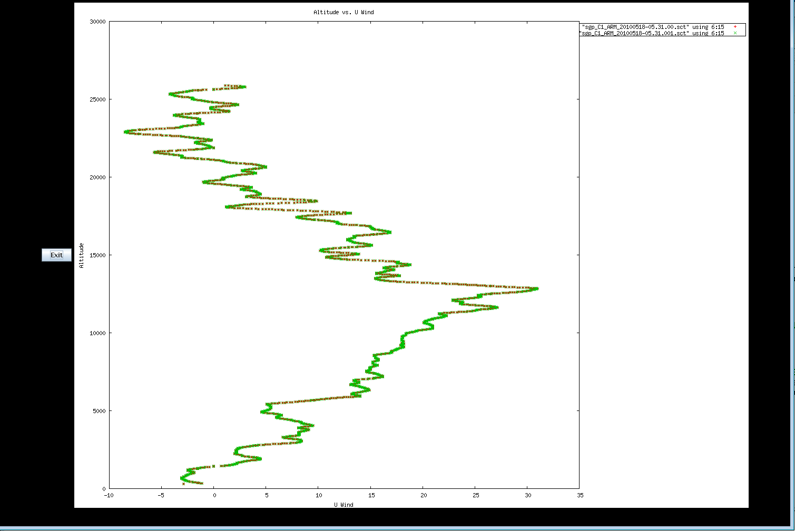
Clear the plots and open, in this order, sgp_C1_ARM_20100518-05.31.00.cls, sgp_C1_ARM_20100518-05.31.00.cls, sgp_C1_ARM_20100518-05.31.00.cls, sgp_C1_ARM_20100518-11.26.00.cls, sgp_C1_ARM_20100518-11.26.00.cls. The resulting plots should only have blue and cyan data visible. This is because the same files will plot on top of itself, so only the last instance of each file is visible.
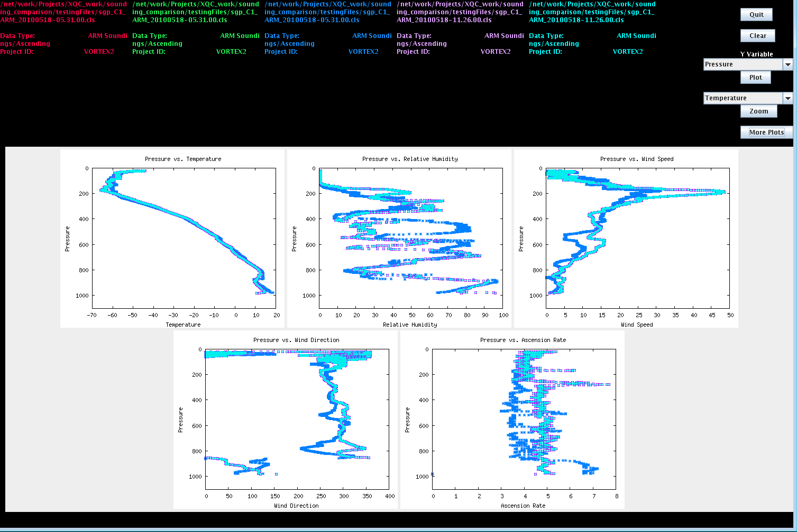
Still, when zooming in, the red data is sgp_C1_ARM_20100518-05.31.00.cls, the green data is sgp_C1_ARM_20100518-05.31.001.cls, the blue data is sgp_C1_ARM_20100518-05.31.002.cls, the purple data is sgp_C1_ARM_20100518-11.26.00.cls, and the cyan data is sgp_C1_ARM_20100518-11.26.003.cls. The numbers increase for any repeated file, even if it is not always the same file which is being repeated (multiple files could be repeated). The number values added to make unique file names increase for any repeated file. This system of renaming a file with the same name was implemented so that two files with the same name could both be plotted.
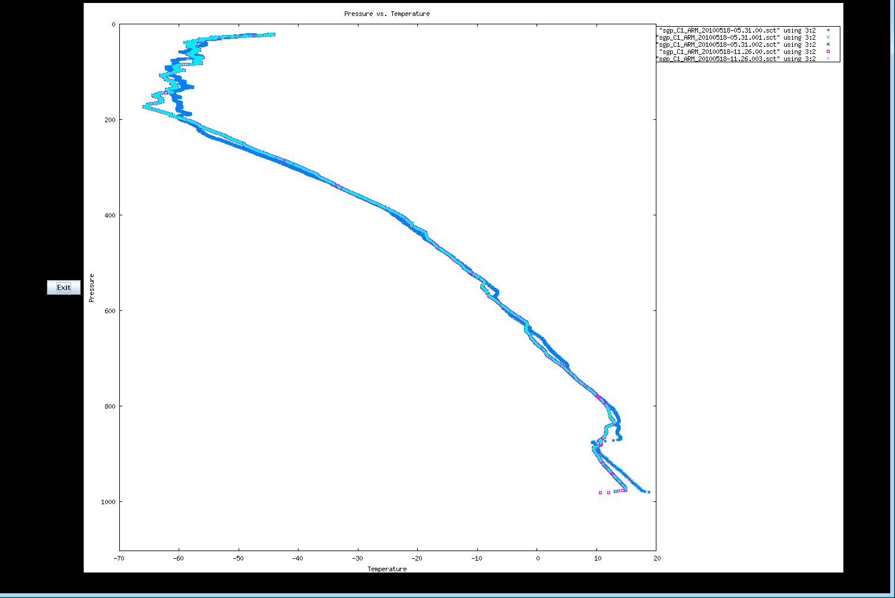
Test Case 5: Two Files with the Same Name
Open sgp_C1_ARM_20100518-11.26.00.cls, and then open the file with the same name contained within the additionalData folder within the same directory.
Plot these files. Both red and green data should be visible
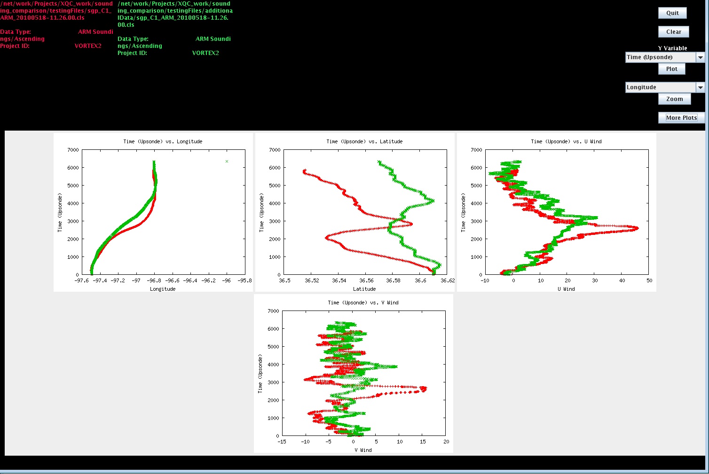
Zoom in on one of the plots. The legend in the zoom view should have a 1 appended to the filename for the green data. This is done so that the intermediate data file for the second data file does not overwrite that of the first data file (which would be bad, especially if they contain different data).
Clear the plot

Test Case 6: Same Data in Files with Different Names
Open sgp_C1_ARM_20100518-05.31.00.cls and sgp_C1_ARM_20100518-17.29.00.cls. These two files contain the same data.
Plot these files. Since they contain the file, only a green plot should appear. Since both files contain the same data, the data will be plotted on top of each other and only the second plot (green) will be visible.
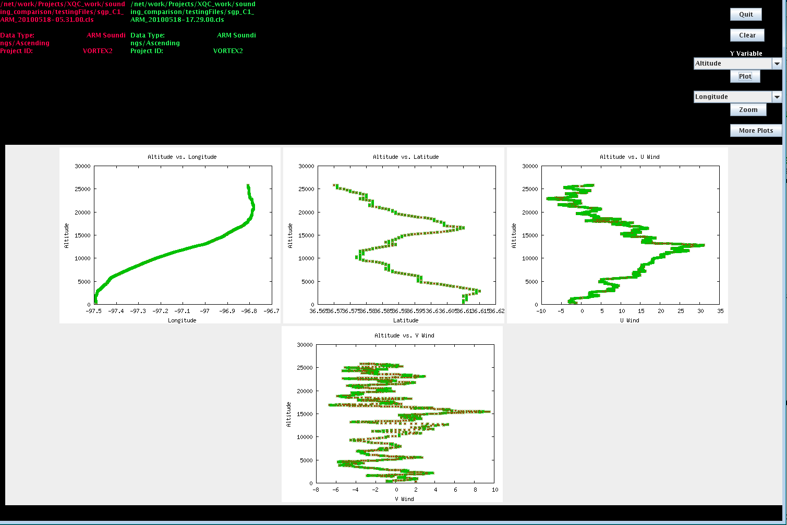
Zoom in on one of the plots. Both full file names should appear in the legend
Exit and clear
Test Case 7: Multiple-Sounding File with a Separate Single-Sounding File
Open and plot sgp_C1_ARM_20100518.cls along with WEST_TEXAS_MESONET_20100614.cls. The former is a file containing data from multiple soundings. The latter is an ordinary data file, the data from which is not included in sgp_C1_ARM_20100518.cls.
Plot the files. They should plot just like any two unrelated single-sounding datafiles, except the file with multiple soundings contains more data than normal (which is all plotted in the same color).
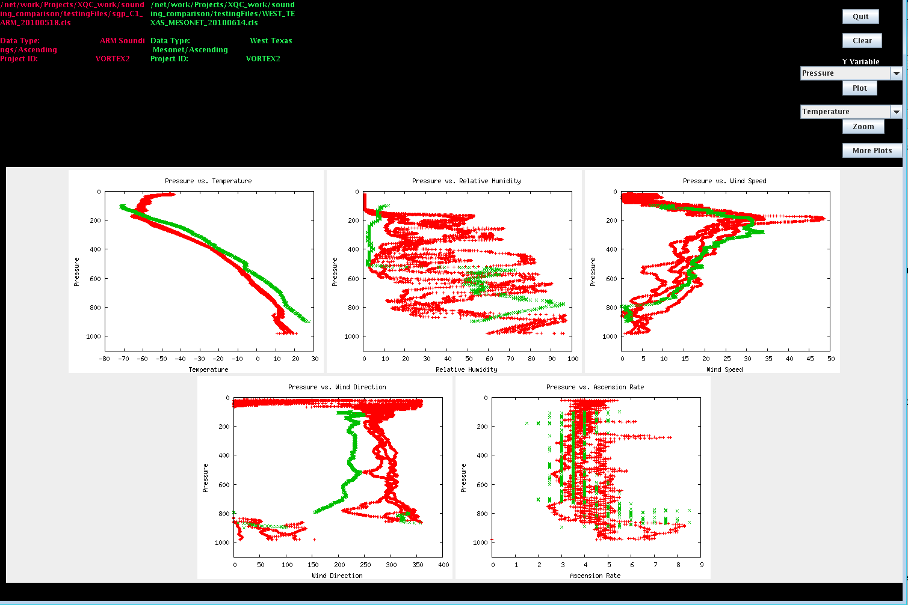
Clear the plot
Test Case 8: Single-Sounding File and Multiple-Sounding File Containing the Same Data
Open and plot sgp_C1_ARM_20100518.cls and sgp_C1_ARM_20100518-11.26.00.cls, the data from which is included in the former. Both red and green data should appear because the green data is being plotted on top of the red data.
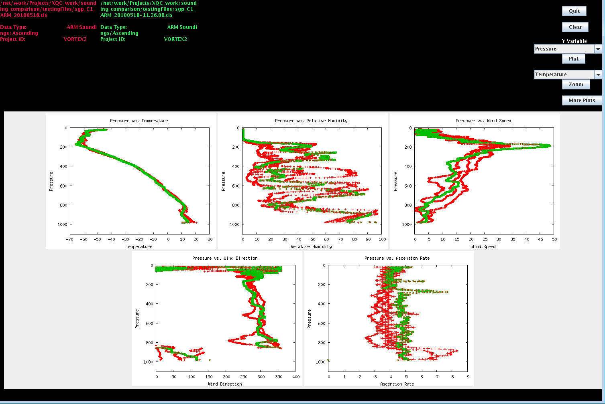
Clear the plot and open the same two data files in the opposite order. The generated plots will only contain green data because the sgp_C1_ARM_20100518.cls data will cover the sgp_C1_ARM_20100518-11.26.00.cls data. Clear the plots.
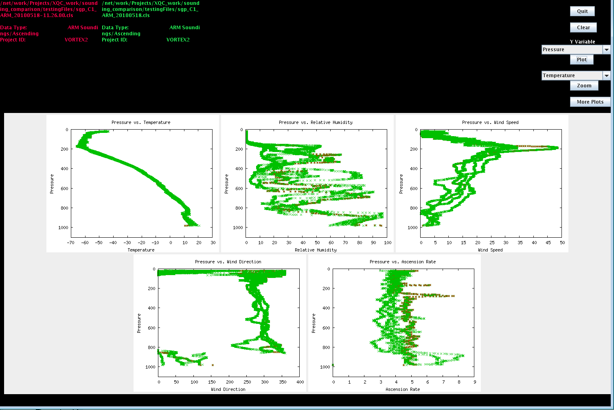
Test Case 9: An Empty File
Open emptyFile.cls, along with any four other files from this directory that have been used in previous tests.
Press the "Plot" button. This should cause a pop-up window to appear, which says that a valid file must be selected
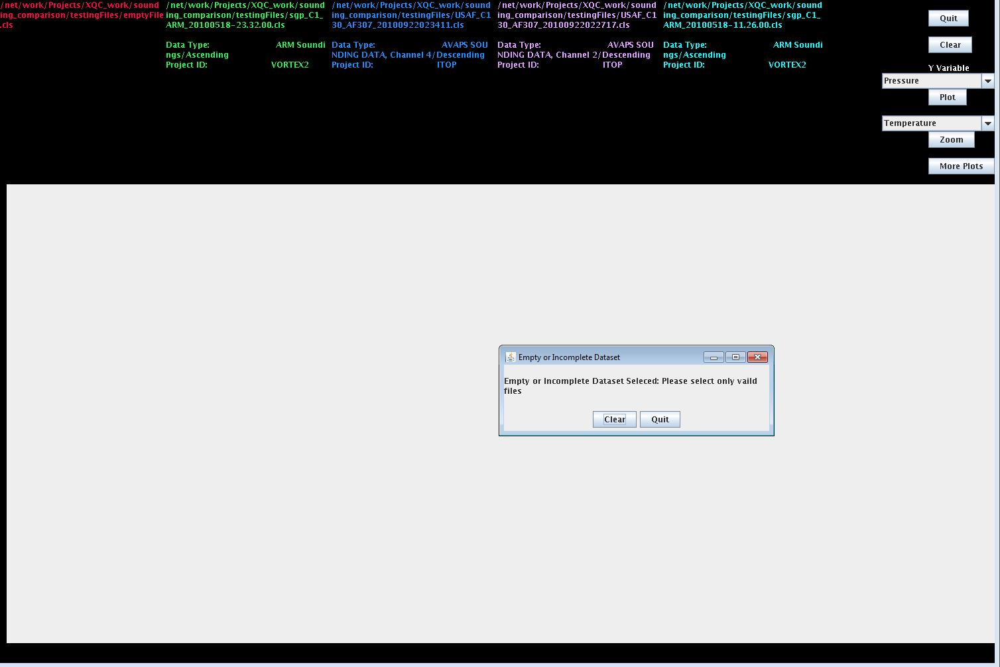
Press the "Clear" button on the pop-up, and the interface should return to the same state it was in immediately after start-up.
Test Case 10: An Incomplete File
Open incompleteFile.cls either by itself or with other files.
Press the "Plot" button. The same pop-up should appear as when opening an empty file.
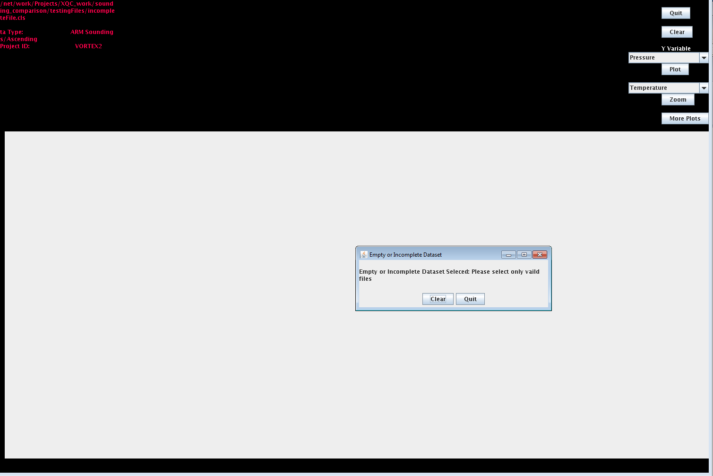
Select the "Quit" button and the program should exit
After Testing
Type 'ls' in the command line while in the directory where the code is being run. The user should see the exact same list of files as displayed prior to beginning testing.
TopRevision History:
| 22-25 July 2011 | Monica Jacobs |